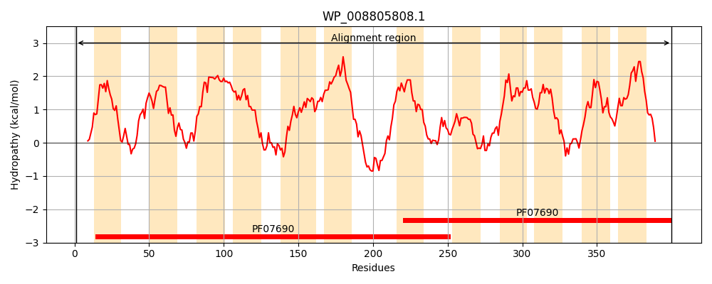
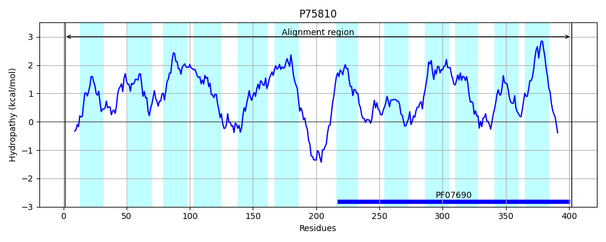
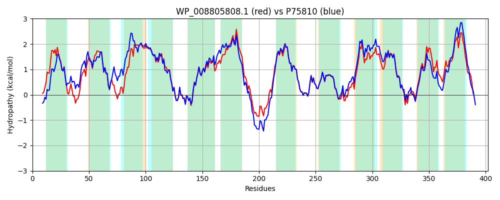

Hit Accession: P75810
Hit TCID: 2.A.1.60.2
Hit Description: gnl|BL_ORD_ID|11413 gnl|TC-DB|P75810|2.A.1.60.2 Inner membrane protein ybjJ OS=Escherichia coli (strain K12) GN=ybjJ PE=1 SV=1
Mach Len: 402
e:0.000000
Query TMS Count : 12
Hit TMS Count: 12
TMS-Overlap Score: 11.550000
Predicted Substrates:None
BLAST Alignment:
Score: 1645 , Bit scores: 638 bits, E-value: 0.0e+00, Alignment length: 402, Percentage identity: 80
Query: 1 MTTQTSRRALQLRLWALFMFFFIPGLLMASWATRTPAIRDQLMLSTAEMGVVLFGLSVGSMSGILCSAWLVKRFGTRKVIRTTMSFAVLGMLVLSLALWVSSAPLFAFGLAIFGASFGSAEVAINVEGAAIEREMNKTVLPMMHGFYSFGTLFGAGVGMAVTGFGLPAAPHILAAALVAILPIAIAIRAIPDGTGKNAAEAAHGEAKGLPVWRDAQLLLIGVIVLAMAFAEGSANDWLPLLMVDGHGFSPTSGSLIYAGFTLGMTLGRFTGGWFIDRYSRVTVVRGSAVMGALGIGLIIFVDNPWVAGISVLLWGIGASLGFPLTISAASDTGPDAPKRVSVVAITGYLAFLVGPPLLGFLGEHFGLRSAMMVVLGLVMVAALVARAVAKP--QSEPVMENS 400
MT +SR AL+ R WALFMFFF+PGLLMASWATRTPAIRD L +S AEMG VLFGLS+GSMSGILCSAWLVKRFGTR VI TMS A++GM++LSLALW++S LFA GL +FGASFGSAEVAINVEGAA+EREMNKTVLPMMHGFYS GTL GAGVGMA+T FG+PA HIL AALV I PI IAI+AIPDGTGKNAA+ KG+P +RD QLLLIGV+VLAMAFAEGSANDWLPLLMVDGHGFSPTSGSLIYAGFTLGMT+GRFTGGWFIDRYSRV VVR SA+MGALGIGLIIFVD+ WVAG+SV+LWG+GASLGFPLTISAASDTGPDAP RVSVVA TGYLAFLVGPPLLG+LGEH+GLRSAM+VVL LV++AA+VA+AVAKP +++ MENS
Sbjct: 1 MTVNSSRNALKRRTWALFMFFFLPGLLMASWATRTPAIRDILSVSIAEMGGVLFGLSIGSMSGILCSAWLVKRFGTRNVILVTMSCALIGMMILSLALWLTSPLLFAVGLGVFGASFGSAEVAINVEGAAVEREMNKTVLPMMHGFYSLGTLAGAGVGMALTAFGVPATVHILLAALVGIAPIYIAIQAIPDGTGKNAADGTQHGEKGVPFYRDIQLLLIGVVVLAMAFAEGSANDWLPLLMVDGHGFSPTSGSLIYAGFTLGMTVGRFTGGWFIDRYSRVAVVRASALMGALGIGLIIFVDSAWVAGVSVVLWGLGASLGFPLTISAASDTGPDAPTRVSVVATTGYLAFLVGPPLLGYLGEHYGLRSAMLVVLALVILAAIVAKAVAKPDTKTQTAMENS 402 | Protein Hydropathy Plots: |
|---|
|  |  |
Pairwise Alignment-Hydropathy Plot:
|
|---|
|  |